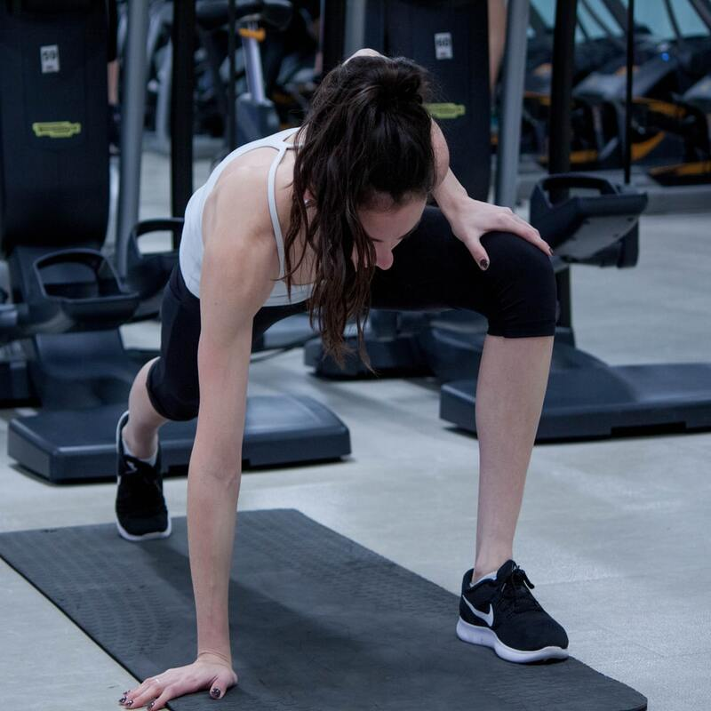

Les salles de sport à Lyon

Nouveau dans la capitale des Gaules, ou simplement enfin décidé à vous remettre au sport ?
A Lyon, vous n'aurez pas de soucis pour trouver la salle de sport adéquate alliant appareils de fitness, cours en groupe (yoga, renforcement, arts martiaux...) et détente, et ce quel que soit votre arrondissement, ou votre quartier.
Que vous soyez résident de la Presqu’Île, ou que vous viviez plutôt sur les Pentes de la Croix Rousse, ou encore, que vous travailliez près de la Part Dieu ou de Confluence, de nombreux clubs vous accueillent et vous permettent de vivre l’expérience fitness de votre choix.